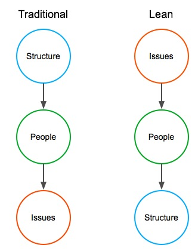

and sometimes downright fishy
thoughts on Technology and Leadership
by Herb Bowie
A New Model for Lean Culture
Introduction
When companies attempt to implement lean principles, some of their biggest stumbling blocks seem to be the cultural elements. While some of the Toyota methods are very clear and specific, the cultural issues often seem more difficult to pin down. Many organizations seem to translate the most obvious elements into terms that they are comfortable with, but something often seems to get lost in the translation, and their lean implementations struggle because they have not really modified some of the basic ways in which they think about their work.
It occurred to me recently that the basic differences in lean culture might be represented in a very simple model. At first the simplicity of the model seemed to be too good to be true, but the more I thought about it, the more it seemed to help clearly explain some of the issues that typically cause the most confusion.
Elements of the Model
The model consists of only three elements.
Structure
By structure, I mean processes, tools, organization charts, roles and responsibilities, job definitions and grades, concepts of operation, budgets, plans, performance goals and objectives, metrics systems and all the other documents and systems by which companies define the ways in which they expect to work.
People
By people, I mean those who actually do the work of the organization.
Issues
By issues, I mean problems, opportunities, risks, red flags, items with which people need help, events that should stimulate action, and situations that require decisions.
The Model

The Traditional Approach
In the traditional organization, as depicted on the left side of the diagram, the emphasis tends to fall first on the structure, then on the people, and finally on the issues.
This means that management is focused first on getting the right structures in place. Next, they train, coach and motivate their people to conform to the structures. And, when issues occur, they tend to treat these as unwelcome exceptions: things that would not have occurred if people had only been doing a better job of following the established structures.
The Lean Approach
In contrast, issues are the first area of focus in a lean culture. Issues are not treated as unwelcome exceptions: they are expected as part of doing business. So the organization is first focused on identifying the most important issues to be worked. People are then trained, coached and motivated to solve problems, to analyze alternatives, and to resolve issues. Structure — processes, tools, organizational models, and all the rest of it — are viewed as essential, but as subservient to issues and to people, changing as needed in responses to issues that arise, and people’s responses to those issues.
The Toyota Way as Seen through the Model
If we arrange the 14 principles of The Toyota Way under the elements of the model, they might appear as follows.
Note that, to show what I consider to be the proper arrangement of two of the items, I have added “Philosophy” at the top, and “Technology” at the bottom. Also note that, while some of the principles reference two or more of the elements, I have listed them under the elements that seem to play the primary role: for example, the idea of continuous process flow is listed under issues, since the explicit purpose for such a structure is to bring problems to the surface.
Philosophy
- Base your management decisions on a long-term philosophy, even at the expense of short-term goals.
Issues
Create continuous process flow to bring problems to surface.
Use “pull” systems to avoid overproduction.
Build a culture of stopping to fix problems, to get quality right the first time.
Use visual control so no problems are hidden.
Go and see for yourself to thoroughly understand the situation (genchi genbutsu).
Make decisions slowly by consensus, thoroughly considering all options; implement decisions rapidly.
People
Grow leaders who thoroughly understand the work, live the philosophy, and teach it to others.
Develop exceptional people and teams who follow your company’s philosophy.
Respect your extended network of partners and suppliers by challenging them and helping them improve.
Become a learning organization through relentless reflection and continuous improvement.
Structure
Standardized tasks are the foundation for continuous improvement and employee empowerment.
Level out the workload.
Technology
- Use only reliable, thoroughly tested technology that serves your people and processes.
Based on the allocation shown above, we can see that the order of precedence I am suggesting is supported by the numbers of items at each level, as well as by the dependencies indicated by the principles themselves: for example, standardized tasks are the foundation for continuous improvement (responding to issues) and employee empowerment (people).
Implications of the Model
Any good model should help explain known phenomena, so let’s look at some of the common observations about differences in lean organizations, and see how they relate to this model.
Attitudes Towards Process
Phenomenon: Other companies seem to struggle with Toyota workers’ acceptance of process standards. For many traditional organizations, it seems difficult to get their workers to take process seriously. These companies sometimes respond to this issue by placing greater emphasis on process discipline, but this often seems to result in a “process backlash,” rather than acceptance of process standards by the workforce.
Explanation: People sometimes mistakenly think that, for Toyota and other lean companies, “process is paramount.” However, as this model clearly shows, process is an essential element, but is subservient to both issues and people. This means that processes change and evolve in response to new issues, or to new answers to existing issues. This also means that teams of workers are empowered to change processes when they demonstrate that they have found a better way.
For traditional organizations, however, processes are viewed as being first and foremost. This means that the people either blindly accept the structures they are given, or covertly resist them as being too rigid and arbitrary.
Waste vs. Productivity
Phenomenon: When first introduced to the concept of waste, and waste reduction, many people used to working in traditional organizations seem to respond by saying, “Yes, I understand: this is the same thing as improving productivity. We’re already doing that.” Yet this response seems to miss the point.
Explanation: For most organizations, productivity improvement is a structural element: part of a company initiative, an annual goal, or a required chart in a standard performance review. Another way to say this is that productivity is a systematic way of measuring the results of waste reduction.
Waste, on the other hand, is an issue: a specific way in which resources are being consumed without adding any value to a product or service.
This may sound like a simple semantic distinction, but think of the resulting difference in the communication to people. In a traditional organization, a leader might set a productivity improvement goal, then flow it down to teams and individuals: “you must improve your productivity this year by 4%.” In a lean culture, the focus is on teaching employees to recognize waste, and then to eliminate it or reduce it. In this environment, leaders focus their communications on helping employees to solve difficult problems, to strengthen their own problem-solving skills, and to mentor others.
Stop the Line
Phenomenon: One of the most frequently cited elements of the Toyota Production System is the ability of any manufacturing worker to stop the assembly line when they recognize a significant product defect. This practice is often difficult for other companies to accept or to understand, let alone implement successfully.
Explanation: The production line is an important element of structure: it is an embodiment of the manufacturing process for product assembly.
In a lean culture, since structure is subservient to issues and to people, it is only natural for a worker to be able to stop the line when he or she spots a significant defect: if the structure is producing defects, then it needs to be stopped and changed, and it is the responsibility of every employee to do this when appropriate.
In a traditional culture, though, since the structure of the production line has the highest priority, it is difficult to accept that people have the power and responsibility to stop it, no matter how significant the issue that has been discovered.
Shoot the Messenger
Phenomenon: Toyota is famous for the way that it deals with problems: managers and engineers inspect the work and the product to help resolve issues, and teams and organizations tend to take joint ownership of problems rather than to lay blame on particular individuals. In more traditional cultures, though, those who bring bad news to leadership are often punished for doing so and, even when they recognize that this sort of behavior is dysfunctional, leaders in traditional organizations often seem powerless to behave differently.
Explanation: In traditional organizations, managers tend to think of themselves as responsible for laying out basic organizational structures, and communicating these to their people. If people later bring problems back to management, then this is viewed in one of the following ways:
The problem resulted from employees failing to conform to the structures they were given, which is indicative of either incompetence or willful disobedience.
The problem resulted from a problem with the structures laid down by management, resulting in an implicit criticism of management.
In either case, the natural response is to punish the messenger to motivate appropriate future behavior.
Kanban
Phenomenon: Before learning of Toyota’s approach, traditional manufacturers controlled work on the shop floor through the implementation of increasingly complex manufacturing resource planning systems. Toyota demonstrated a better way, however, by using simple visual triggering systems employing cards or other simple devices to signal that supplies of a part had been exhausted, and more needed to be built.
Explanation: The natural tendency of a traditional organization is to create a complex, highly structured system to control work. People are then trained on how to use the system, and when results are not as desired, the system is improved or the people are given additional training to improve their conformance to the system.
The lean approach, however, is to recognize the need to build more parts as an issue: rather than hiding issues as symptoms of failure, the lean culture naturally accepts and highlights such issues so that people can respond to them appropriately.
Growth vs. Decay
Phenomenon: Over the past seven decades, the Toyota Corporation has grown from a small, almost unknown Japanese company to a major international presence. Even as it has opened its kimono and invited others to study and learn from its practices, other companies have imitated its methods and tried to emulate its success, but Toyota has continually outpaced its competitors and adapted successfully to new challenges as it has continued to grow.
Explanation: The traditional model is essentially a steady state model, in that it assumes that, once the correct structures have been put in place, conformance to structure is the only requirement for continued operation. In this sense, it is like any perpetual motion machine, since it sooner or later succumbs to friction and entropy and loses energy until it ceases to function.
The lean model, on the other hand, is a dynamic model. A steady stream of new issues is assumed, and the people and the structures of the organization adapt and respond to these new issues as they emerge.
Adoption of External Standards
Phenomenon: Despite the fact that many standards have been created in order to instill and promote the very principles of quality on which Toyota has built its own Production System, Toyota has repeatedly indicated that it has no interest in demonstrating conformance to these external standards, including ISO 9000, Malcolm Baldrige, CMMI, and others.
Explanation: Since traditional cultures place the highest priority on structures, they often attempt to implement quality improvements by basing their own internal structures on some existing external structures, such as these sorts of quality standards. These sorts of quality programs often fail to bear long-term fruit, however.
In the case of lean culture, though, since an organization’s structures are seen as evolving in response to their own people and issues, and since they have no influence over external structures, it makes no sense for them to seek to conform to these external standards.
Conclusion
This new cultural model seems helpful, in that it is simple, intuitive and easy to grasp, yet helps us to understand and explain the methods, practices, and ultimately the successful results already observed and documented to be associated with a lean organization such as Toyota’s.
April 22, 2016